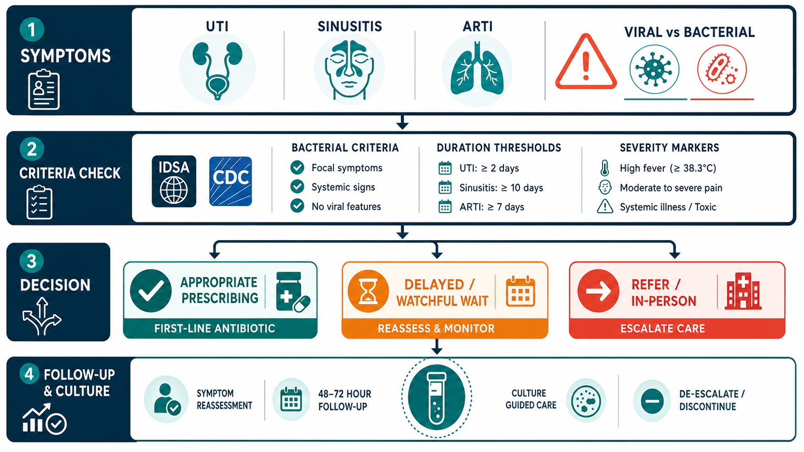

Key Takeaways
- A large observational study of a direct-to-patient telehealth program found antibiotic prescribing quality was high for uncomplicated UTI but lower for acute respiratory infections — confirming that stewardship success depends heavily on condition type.[2]
- For sinusitis, at least one study found virtual visits were associated with less antibiotic prescribing than in-person office visits, and antibiotic selection was comparable across both channels.[3]
- Systematic reviews and meta-analyses of telehealth prescribing show variable results by condition — telehealth is neither uniformly better nor worse than in-person care; program design and clinical decision support matter most.[4][5]
- Two well-documented stewardship challenges in telehealth are the risk of over-treating non-specific urinary symptoms (i.e., asymptomatic bacteriuria) and under-applying the IDSA criteria for acute bacterial rhinosinusitis before prescribing.[8][9]
- CDC Core Elements of Outpatient Antibiotic Stewardship — commitment, action, tracking, and education — have demonstrated measurable reductions in unnecessary prescribing when implemented in outpatient settings.[7]
Stewardship Pressure on Telehealth
Antibiotic resistance is one of the most serious long-term threats in medicine. Globally, antimicrobial-resistant infections cause hundreds of thousands of deaths each year, and the trajectory is upward. In the United States, outpatient prescribing drives a significant share of antibiotic use — and a substantial portion of that prescribing is for conditions that may not require antibiotics at all.
Against that backdrop, telehealth has grown from a niche service to a mainstream care channel. Tens of millions of Americans now use telehealth annually, and conditions like UTIs, sinusitis, and upper respiratory infections account for a large share of those visits. The question of whether telehealth prescribes antibiotics appropriately is therefore not academic — it carries real public health weight.
Early concerns were understandable. Direct-to-consumer telehealth platforms, operating with speed and convenience as primary selling points, raised the possibility of antibiotic prescribing that prioritized patient satisfaction over guideline adherence. Published data on some early programs showed prescribing rates well above in-person benchmarks for respiratory infections.[1] Those findings prompted a closer look at the evidence — and at what separates high-quality telehealth stewardship from low-quality prescribing at a distance.
The picture that has emerged over the past several years is more varied, and more instructive, than either critics or advocates of telehealth predicted.
What the Evidence Shows on Telehealth Antibiotic Prescribing
Three categories of evidence now inform the stewardship conversation in telehealth: direct program evaluations, condition-specific comparisons, and systematic reviews across multiple studies.
Quality of Prescribing in Large Telehealth Programs
A detailed 2022 analysis of a large direct-to-patient telehealth program — Ray et al., PMC8769091 — examined antibiotic prescribing across several common conditions including uncomplicated UTI, sinusitis, and acute respiratory tract infections (ARTIs).[2] The findings were not uniform. For uncomplicated UTIs, guideline concordance was high, with appropriate first-line agent selection in the substantial majority of encounters. For ARTIs — conditions that are often viral and typically do not warrant antibiotics — prescribing rates were considerably higher than current guidelines recommend. Sinusitis fell between these two poles.
The study's practical takeaway: telehealth quality in antibiotic prescribing cannot be generalized across conditions. A program can perform well for UTIs while simultaneously over-prescribing for respiratory complaints. Condition-specific monitoring matters more than a single program-wide prescribing rate.
Sinusitis: Virtual Visits May Prescribe Less
One of the more striking findings in the stewardship literature comes from a 2019 comparison of virtual and office visits for adults with sinusitis.[3] Shi et al. found that virtual visits were actually associated with less antibiotic prescribing than in-person office visits, and that antibiotic choice was similar across both channels. One plausible explanation: telehealth platforms that prompt clinicians to confirm specific IDSA diagnostic criteria before prescribing create a built-in pause that in-person encounters may lack. A patient presenting in person with congestion and facial pressure may receive a prescription faster, with less structured criteria review, than one who fills out a structured telehealth intake form.
Systematic Reviews: Condition and Context Determine Quality
Two systematic reviews and meta-analyses published in 2021 and 2022 synthesized the broader literature.[4][5] Both arrived at similar conclusions: telehealth antibiotic prescribing is not uniformly higher or lower than in-person care. Results vary substantially by condition, by program design, and by the presence or absence of clinical decision support. Studies of sinusitis and pediatric ARTIs with active stewardship programs showed comparable or even better guideline concordance in virtual settings. Studies of general DTC platforms without structured criteria showed higher overall prescribing rates. A pediatric primary care network study found high guideline-concordant antibiotic management for both ARTIs and sinusitis when an active stewardship framework was built into the telehealth workflow.[6]

Evidence Summary: Telehealth Antibiotic Prescribing by Condition
| Condition | Study / Source | N | Prescribing Rate or Concordance | Key Finding | Cite |
|---|---|---|---|---|---|
| UTI | Ray et al. 2022 (DTC program) | Large observational cohort | High guideline concordance | First-line agent selection strong; UTI best-performing condition in program | [2] |
| Sinusitis | Shi et al. 2019 (virtual vs office) | Multi-site comparison | Virtual: lower Abx rate vs in-person | Virtual visits associated with less antibiotic prescribing; antibiotic choice similar | [3] |
| ARTI | Ray et al. 2022 (DTC program) | Large observational cohort | Higher-than-guideline rates | Respiratory prescribing above recommended benchmarks; largest stewardship gap | [2] |
| Sinusitis + ARTI (pediatric) | Systematic review, Kouri et al. 2021 | Pediatric PCN network | High concordance with active stewardship | Stewardship framework embedded in telehealth workflow improved guideline adherence | [6] |
| Mixed infections | Meta-analysis, PMC9447298 (2022) | Multiple studies pooled | Variable; depends on condition + program | No uniform telehealth effect; decision support and program design are key modifiers | [4] |
| Mixed infections | Cambridge ASHE meta-analysis (2021) | Multiple studies pooled | Variable across conditions | Telehealth neither systematically better nor worse; stewardship infrastructure determines outcomes | [5] |
| UTI (IT interventions) | Systematic review, PMC12751869 (2025) | Multiple RCTs + observational | Improved appropriateness with decision support | Clinical decision support and IT tools reduce inappropriate prescribing without patient-harm signals | [10] |
Where Telehealth Stewardship Gets Hard
Acknowledging where telehealth has genuine structural disadvantages is part of honest stewardship. Two specific gaps show up repeatedly in the literature and in clinical practice.
Limited Point-of-Care Testing
In a clinic, a rapid strep test, a urine dipstick, or a nasal swab can redirect a clinical decision within minutes. Telehealth visits cannot access that real-time data. This creates asymmetric pressure: the physician must decide based on symptom history and prior test results, without the confirmatory data that in-person care provides. For some conditions, that gap is manageable — uncomplicated UTIs in young non-pregnant women, for example, can be reliably diagnosed from symptoms alone. For others, the absence of point-of-care testing creates real uncertainty about bacterial versus viral etiology.
Risk of Over-Treating Non-Specific Urinary Symptoms
Asymptomatic bacteriuria — bacteria present in urine without symptoms — is one of the most over-treated conditions in all of medicine. IDSA guidelines (2011) are explicit: asymptomatic bacteriuria should not be treated with antibiotics in non-pregnant patients.[9] The risk in telehealth is that a patient who reports vague urinary discomfort, submits a urine culture showing bacterial growth, and receives an antibiotic prescription may have had asymptomatic bacteriuria rather than a true infection. Every unnecessary antibiotic course contributes to resistance and disrupts the patient's microbiome without delivering any clinical benefit.
The fix is structured history-taking. A UTI requires specific symptoms — dysuria, frequency, urgency, suprapubic discomfort. Nonspecific complaints without those classic features should trigger a more careful diagnostic conversation, not an automatic prescription.
Under-Applying ABRS Criteria for Sinusitis
IDSA's 2012 guidelines for acute bacterial rhinosinusitis (ABRS) define bacterial sinusitis by three specific patterns: symptoms that persist for 10 or more days without improvement; severe symptoms (fever ≥39°C plus facial pain or purulent discharge) for at least 3–4 consecutive days; or a "double-sickening" pattern in which the patient initially improves and then worsens again.[8] Presentations that do not meet any of these three criteria are presumed viral and should not receive antibiotics.
The stewardship failure in telehealth — as in in-person care — is prescribing for patients with 5 or 6 days of nasal congestion and pressure who haven't met any of those thresholds. A well-structured telehealth intake that explicitly asks about symptom duration and pattern can apply these criteria as reliably as a clinic visit.
What Effective Telehealth Stewardship Looks Like
The good news from the evidence base is that telehealth stewardship is achievable when programs build the right infrastructure. The published data point to four practical pillars.
CDC Core Elements
The CDC's Core Elements of Outpatient Antibiotic Stewardship — first published in 2016 and operationalized in subsequent implementation evidence — provide a framework applicable to any ambulatory setting, including telehealth.[7] The four elements are: organizational commitment and designated stewardship leadership; evidence-based guidelines and action for policy improvement; tracking and reporting of prescribing data by diagnosis and clinician; and ongoing education. A 2021 study published in Clinical Infectious Diseases found that implementing these elements was associated with meaningful reductions in antibiotic prescribing rates and lower rates of subsequent hospitalizations — measurable, real-world outcomes.[7]
Delayed Prescribing Strategies
For conditions that may be viral or may resolve without antibiotics, delayed prescribing offers a middle path: the clinician writes a prescription but instructs the patient to fill it only if symptoms worsen or fail to improve within 48–72 hours. This strategy reduces unnecessary antibiotic fills while preserving the patient's ability to treat quickly if bacterial infection is confirmed by progression. Telehealth platforms that include structured follow-up messages at 48 hours can operationalize this approach at scale.
Clinical Decision Support and Structured Criteria
Decision support tools — symptom-duration checklists, severity scoring, embedded guideline criteria in the visit workflow — are among the most consistent predictors of guideline-concordant prescribing. Research on IT interventions to optimize antibiotic prescribing for UTIs, published in 2025, found that decision support tools improved prescribing appropriateness without any signal of patient harm.[10] A telehealth platform that prompts clinicians to confirm IDSA criteria before generating a prescription creates an audit trail and a structural guardrail simultaneously.
Lab Pathways and Structured Follow-Up
When point-of-care testing is unavailable, a well-designed lab pathway can compensate. Ordering a urine culture before or concurrent with an empiric course for UTI, then reviewing results for de-escalation or treatment adjustment, is the same standard applied in any clinical setting. The key is building the follow-up step into the telehealth workflow — not leaving it to the patient to initiate.
What This Means for Patients and Clinicians
The evidence does not support the view that telehealth is inherently reckless with antibiotics, nor the view that it performs as well as any in-person clinic by default. Both channels have strengths and gaps.
For conditions with well-defined clinical criteria that can be assessed by symptom history — uncomplicated UTIs in particular — telehealth can match or exceed in-person prescribing quality when structured intake and guideline-embedded decision support are in place. The symptom history is the diagnostic tool, and a thorough remote history is clinically equivalent to a thorough in-person one.
For conditions where point-of-care testing is important to distinguish bacterial from viral etiology, in-person care retains an advantage. A patient with 4 days of sore throat who is uncertain whether it is strep or viral benefits from a rapid antigen test that a telehealth visit cannot provide. The clinically appropriate response in that case may be to direct the patient to an in-person visit or urgent care for testing before any antibiotic decision is made.
Appropriate triage — deciding which conditions are suited to virtual evaluation and which require in-person workup — matters more than the care channel itself. A patient who calls a telehealth service for a possible strep throat and is appropriately directed to in-person testing, then treated based on a confirmed positive result, has received better stewardship care than one who receives an empiric antibiotic from an in-person clinic without confirmatory testing.
Both telehealth and in-person clinicians make antibiotic decisions. The quality of those decisions depends on clinical training, structured criteria, and the willingness to say "we need more information" — not on which side of a screen the clinician sits.
Published evidence through 2026 shows that telehealth antibiotic prescribing quality is highly condition-specific and program-specific — not a fixed property of the care channel. Strong programs use structured intake, clinical decision support, delayed prescribing where appropriate, lab pathways for follow-up, and active tracking. Weak programs prescribe based on patient preference without applying established criteria. The difference between those two outcomes is not telehealth versus in-person. It is whether effective stewardship infrastructure exists.
Frequently Asked Questions
The evidence is more varied than most people expect. For some conditions — particularly sinusitis — published data show telehealth visits may actually prescribe fewer antibiotics than in-person visits. For others, like acute respiratory infections, early direct-to-consumer telehealth programs showed higher prescribing rates than in-person benchmarks. The key factor is not the visit channel but the presence of clinical decision support, guideline adherence monitoring, and structured criteria — elements that well-run telehealth programs now embed directly into the visit workflow.
The main challenge is the absence of point-of-care testing. In a clinic, a physician can perform a rapid strep test, urine dipstick, or nasal swab in minutes. Telehealth visits rely on symptom history and prior lab results. This limitation raises the risk of over-prescribing for conditions that may be viral, and the risk of undertreating when bacterial infection is likely but unconfirmed. Effective telehealth stewardship programs address this through delayed prescribing strategies, integrated lab ordering pathways, and structured follow-up protocols.
IDSA guidelines define acute bacterial rhinosinusitis by three clinical patterns: symptoms persisting for 10 or more days without improvement, severe symptoms (fever above 39°C plus facial pain or purulent nasal discharge) for at least 3–4 consecutive days, or a double-sickening pattern in which symptoms worsen after an initial improvement. A telehealth physician can apply these criteria through a structured symptom history. Patients who meet them may be appropriate for empiric antibiotic therapy. Those with symptoms under 10 days and without severe features typically do not need antibiotics regardless of the care channel — telehealth or in-person.
The CDC's Core Elements of Outpatient Antibiotic Stewardship focus on four areas: commitment (leadership buy-in and a designated stewardship champion), action for policy and practice (evidence-based treatment guidelines and clinical decision support tools), tracking and reporting (monitoring prescribing rates by diagnosis and clinician), and education and expertise (ongoing clinician training on appropriate prescribing). Research published in Clinical Infectious Diseases in 2021 found that implementing these elements was associated with reduced antibiotic prescribing and lower rates of subsequent hospitalizations.
References
- Kimmell K, Dempsey D, Rao S. "Antimicrobial prescribing in the telehealth setting." Clinical Infectious Diseases. 2022. pmc.ncbi.nlm.nih.gov/articles/PMC9384578/
- Ray MJ, et al. "Quality of Antibiotic Prescribing in a Large Direct-to-Patient Telehealth Program." Clinical Infectious Diseases. 2022. pmc.ncbi.nlm.nih.gov/articles/PMC8769091/
- Shi Z, et al. "Comparison of Diagnosis and Prescribing Practices Between Virtual Visits and Office Visits for Adults With Sinusitis." Open Forum Infectious Diseases. 2019. pmc.ncbi.nlm.nih.gov/articles/PMC6778270/
- "Antibiotic prescribing for acute infections in synchronous telehealth consultations: systematic review and meta-analysis." 2022. pmc.ncbi.nlm.nih.gov/articles/PMC9447298/
- "Outpatient antibiotic prescribing for common infections via telemedicine versus face-to-face visits: systematic literature review and meta-analysis." Antimicrobial Stewardship & Healthcare Epidemiology. 2021. cambridge.org (ASHE)
- Zetts RM, et al. "Telemedicine antibiotic stewardship within a pediatric primary care network." PubMed. 2021. pubmed.ncbi.nlm.nih.gov/33741531/
- King LM, et al. "Impact of implementing the CDC Core Elements of Outpatient Antibiotic Stewardship in US outpatient settings." Clinical Infectious Diseases. 2021;73(5):e1126. academic.oup.com/cid/article/73/5/e1126/6025520
- Chow AW, et al. (IDSA). "IDSA Clinical Practice Guideline for Acute Bacterial Rhinosinusitis in Children and Adults." Clinical Infectious Diseases. 2012;54(8):e72. academic.oup.com/cid/article/54/8/e72/367144
- Gupta K, et al. (IDSA/ESCMID). "International Clinical Practice Guidelines for the Treatment of Acute Uncomplicated Cystitis and Pyelonephritis in Women." Clinical Infectious Diseases. 2011;52(5):e103. academic.oup.com/cid/article/52/5/e103/388285
- "IT interventions to optimize antibiotic prescribing for urinary tract infections: systematic review." BMC Infectious Diseases. 2025. pmc.ncbi.nlm.nih.gov/articles/PMC12751869/